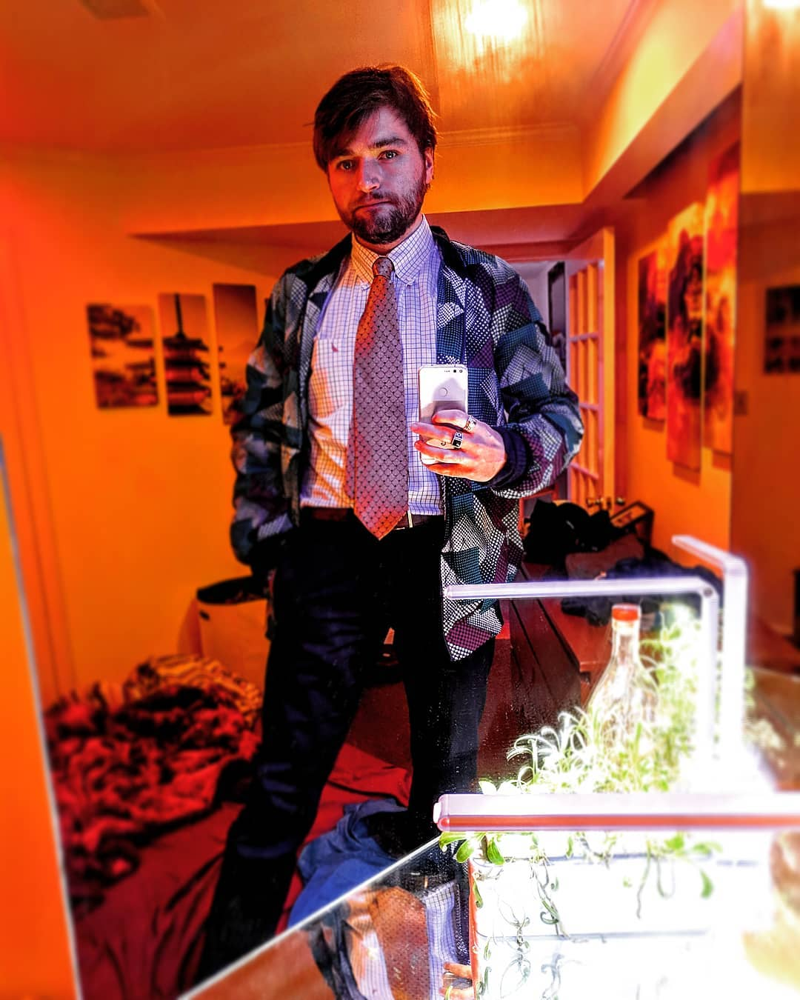

The Holocron.Foundation
Preserving yesterday and building tommorrow
Welcome to the Holocron.Foundation. We aim to preserve the scientific and cultural works of yesterday whilst building out the infrastructure to power the galaxy tommorrow. In order to accomplish these goals, the Holocron.Foundation has undertaken several projects:
- Phoenix
- Communal.Network
- Eden Drive
- Apollo Network
- PyO
- QuickTMI
- Fluent
- UOS
- CiteIt
- Journal
- GIN
- UNGovern
These projects are outlined in more detail in our working paper, and collectively compose Phase I of the Holocron.Foundation, entitled Ouroboros.

According to Encyclopædia Britannica, Ouroboros is an "emblematic serpent of ancient Egypt and Greece represented with its tail in its mouth, continually devouring itself and being reborn from itself. A gnostic and alchemical symbol, Ouroboros expresses the unity of all things, material and spiritual, which never disappear but perpetually change form in an eternal cycle of destruction and re-creation." Phase I of the Holocron.Foundation is named for Ouroboros because it consists of the creation of a galactic network with advanced communication, governance, economic, and scientific capabilities which can consume and improve itself.
Prior Work
The current projects of the Holocron.Foundation build upon older codebases and examples of ours. These projects have evolved into the present projects, but they still provide valuable examples and information. They include:- Library: Library has been folded into Eden Drive, but an older build exists on the Ethereum Blockchain, which consists of delivering three texts globally in a censor resistant manner. These texts are:
- Reincarnati.online: Reincarnati.online has been folded into Communal.Network. Reincarnati.online consists of delivering the web via Ethereum. Though the project has been refactored and rolled into Communal.Network, you can view examples of the html and JavaScript containing the three texts from the library delivered via Ethereum. To accomplish this, JSZip was also uploaded to the Etheruem Blockchain, which may prove useful.
Support
We intend to do our best to build out this project as quickly as possible, however, this could be greatly accelerated in a few ways:- Help code our projects: This is one of the best ways to help support, whether you're a novice, you only know portions of the stack we are using, or you only have a minor contribution, your work will help build this quicker and better!
- Use our projects: Using our projects is crucial, particularly items like Communal.Network. A bigger userbase simply leads to a more robust project.
- Spread the word about our projects: Spreading the word helps to change the world! It also contributes to the other methods of support.
- Donate: We have no paid employees at present, which means no one is working on this full-time, which could greatly accellerate progress. All the money that has been expended has come out of our own pockets. Whether it's enough to buy one of us a beer or enough to get an office and some employees, any amount helps.
The Team and Our Supporters
Samuel Troper, CEO
Samuel Troper has extensive experience related to Blockchain, AI, and economics. While attending Kenyon College, Samuel built a ride sharing app called SafeRides: a local, free, ridesharing service to enhance student safety; He built a machine-learning driven spam filter and presented it at a SIAM conference; He worked as an economic research assistant, where he built and maintained a web scraping application to pull data from online retailers such as Amazon, and then performed advanced economic analyses on this data; Currently, Samuel serves as a consultant at Bates White Economic Consulting, where he provides advance analysis for clients with a wide variety of crucial needs.
Samuel’s background in math, computer science, and economics encouraged him to explore issues which exist at the intersection of the three fields, such as censorship, cryptography, and logic, which led him to create The Holocron.Foundation.
Outside of his time spent performing economic consulting and building the Holocron.Foundation, he enjoys making and mixing music, cooking, rugby, and writing.